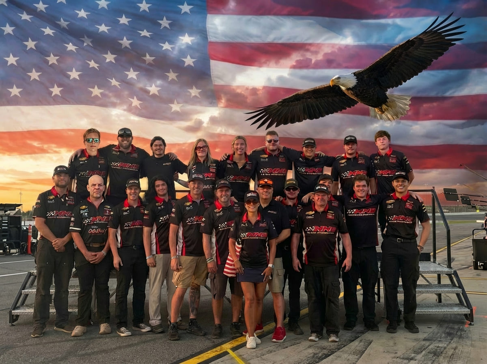
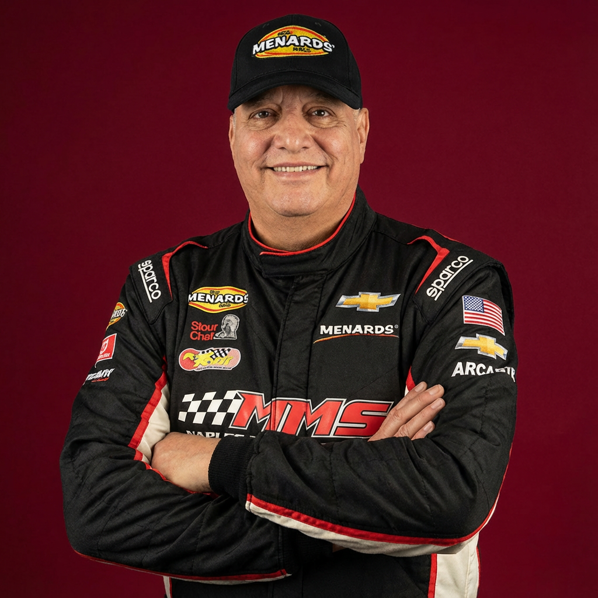
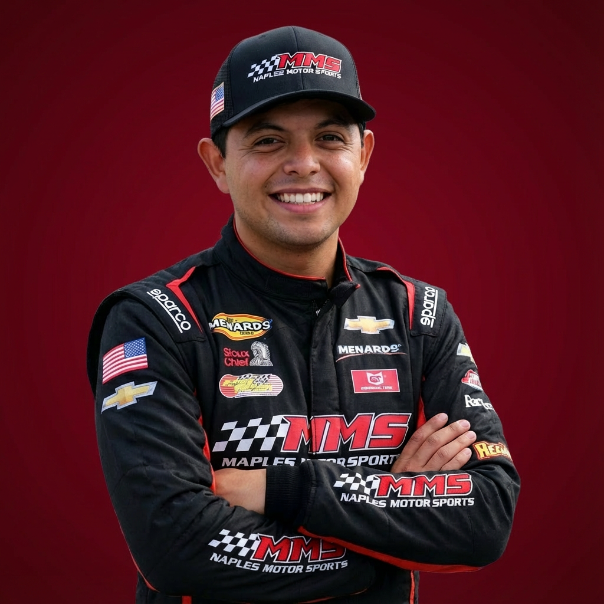
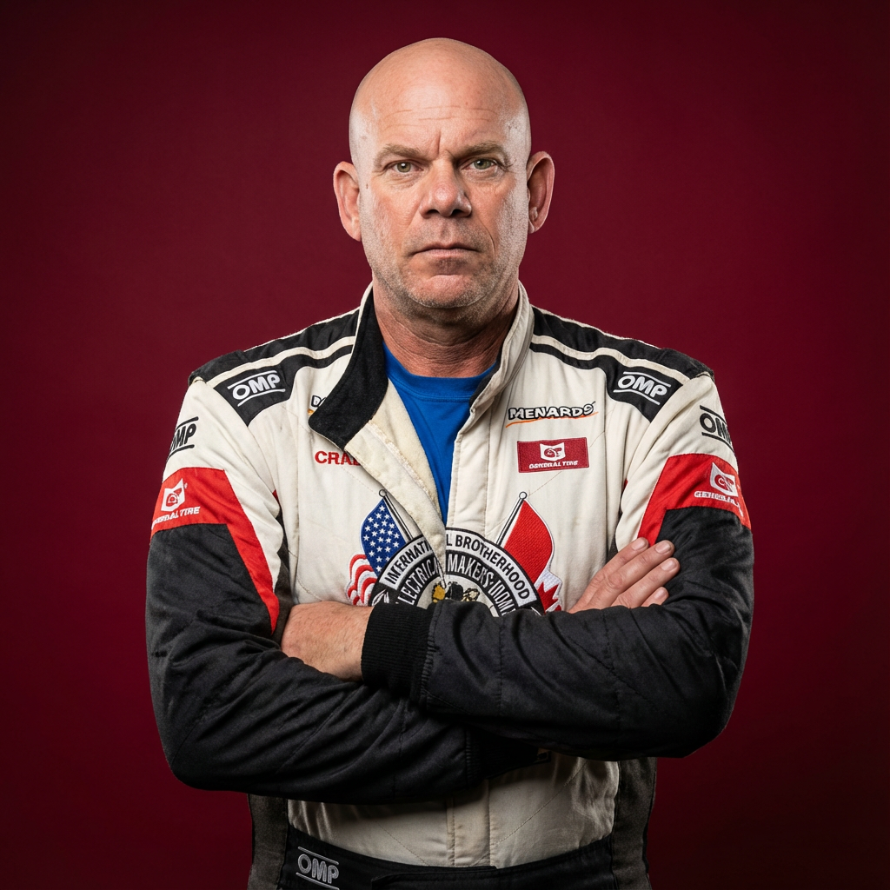
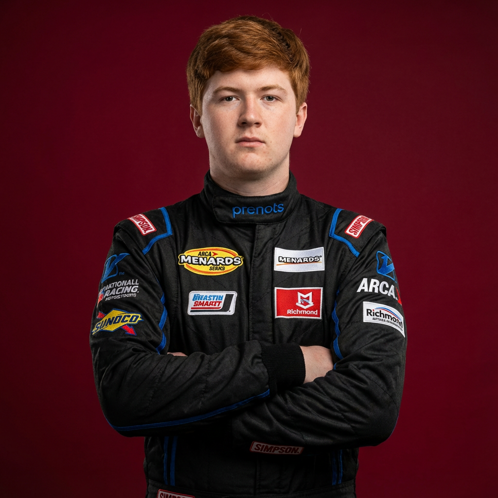
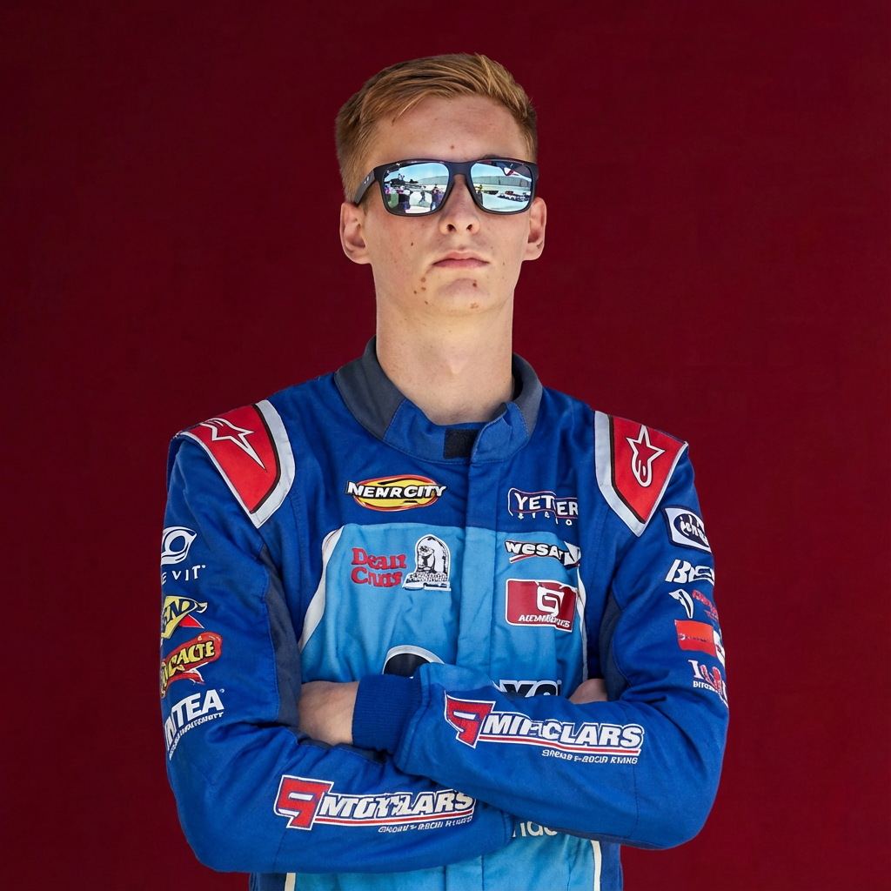
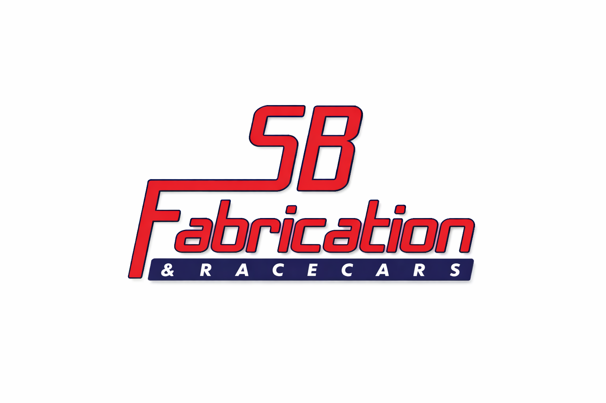

CHAMPIONSHIP PERFORMANCE | RACING EXCELLENCE
Founded in 2025 by veteran racer and entrepreneur Michael Maples, Maple Motorsports represents the culmination of decades of racing passion, military discipline, and business excellence. Based in Oklahoma, our team combines championship-level talent with cutting-edge technology and an unwavering commitment to excellence.
As a full-time competitor in the NASCAR ARCA Menards Series, Maple Motorsports is building a legacy of performance, integrity, and innovation. Our diverse roster of talented drivers brings together experience, youth, and determination, creating a dynamic team capable of competing at the highest levels of stock car racing.
From our state-of-the-art facilities to our experienced crew chiefs and mechanics, every aspect of Maple Motorsports is designed for one purpose: winning. We're not just racing – we're building a championship organization that will compete at NASCAR's highest levels for years to come.
Every decision, every strategy, every race – focused on winning championships
World-class drivers, experienced crew, cutting-edge technology
Commitment to performance, innovation, and continuous improvement


Team Owner & Driver #99. Army veteran and oil industry entrepreneur. 7th place ARCA 2025, 8th place 2024. Founded Maple Motorsports after 30+ years racing experience. From California asphalt to ARCA championship contender.

2x Wendell Scott Trailblazer Award winner and NASCAR Drive for Diversity graduate. International racing experience across Euro and Canada Series. Community champion and FACES board member inspiring young fans nationwide.

U.S. Navy EOD veteran, Union Boilermaker, and commercial diver. 35+ years racing from IHRA drag racing to NASCAR dirt series. Boilermakers Union partnership. Blue-collar excellence meets championship determination.

🏆 2025 ARCA East Rookie of the Year & 4th Place Championship finisher. From go-karts at 9 to ARCA at 15. Mississippi's youngest licensed stock car racer with pit crew experience and championship potential.

Eagle Scout, SF Symphony tuba player, and ARCA West competitor. Triple threat: academics, music, and racing. The future of NASCAR - intelligent, well-rounded, and fiercely competitive. Bare Bones sponsored.
Daytona Beach, Florida
12:00 PM ET | FOX
Avondale, Arizona
6:00 PM ET | FS1
Kansas City, Kansas
12:30 PM ET | FS1
Talladega, Alabama
12:30 PM ET | FS1
Watkins Glen, New York
1:30 PM ET | FS2
Toledo, Ohio
7:00 PM ET | FS1
Brooklyn, Michigan
5:00 PM ET | FS2
Long Pond, Pennsylvania
3:00 PM ET | FS1
Marne, Michigan
7:00 PM ET | FS2
Elko, Minnesota
9:00 PM ET | FS2
Joliet, Illinois
8:00 PM ET | FS1
Lime Rock, Connecticut
4:00 PM ET | FS2
Brownsburg, Indiana
5:00 PM ET | FS1
Newton, Iowa
7:00 PM ET | FS1
Springfield, Illinois
2:00 PM ET | FS1
Oregon, Wisconsin
9:00 PM ET | FS1
DuQuoin, Illinois
8:30 PM ET | FS1
Salem, Indiana
6:00 PM ET | FS2
Bristol, Tennessee
5:30 PM ET | FS1
Kansas City, Kansas
8:00 PM ET | FS1
Maple Motorsports is proud to partner with industry-leading brands that share our commitment to excellence, innovation, and championship performance. Together, we're building a winning legacy.

Join the Maple Motorsports family and be part of our championship journey
BECOME A PARTNERWhether you're interested in sponsorship opportunities, media inquiries, or just want to learn more about Maple Motorsports, we'd love to hear from you.